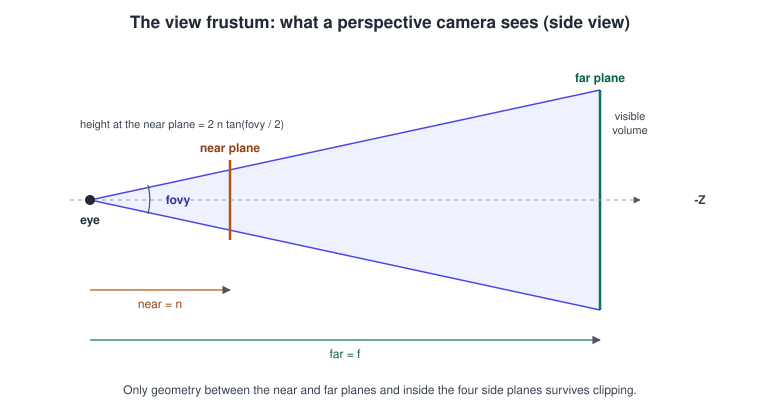
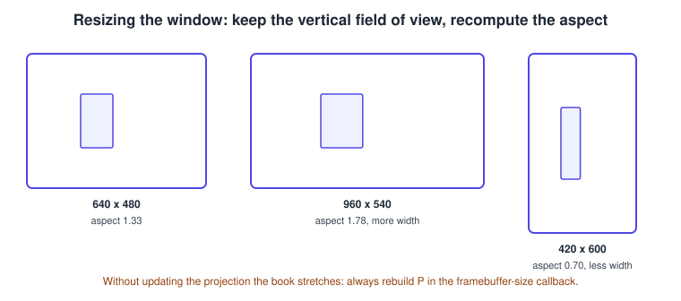
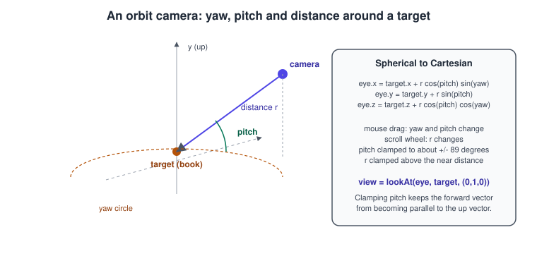

Cameras and Projection in OpenGL
|
This content was generated with the assistance of AI and should be verified against the official documentation before being relied on in production. |
OpenGL has no camera. There is a viewport, a clip-space cube and whatever matrices your vertex shader multiplies; the "camera" is a pair of those matrices that your program builds: a view matrix that places the world in front of an eye, and a projection matrix that squeezes a frustum into the clip-space cube. This page defines both, shows how to keep the picture correct when the window changes shape, and builds the camera that Bookshelf GL keeps for the rest of the section: an orbit camera that circles the shelf under mouse control.
The facts were checked in November 2026. The versions documented are OpenGL 4.6 core (the program runs on a 4.1 core context, the macOS ceiling), OpenGL ES 3.0 to 3.2 for the Android snippet, GLM for the maths and GLFW 3 for the window and input. The meaning of the individual spaces and the clip-space conventions are in Coordinate Systems and Transforms; the API-independent maths is in Coordinate Spaces and Transforms and Vectors, Matrices and Homogeneous Coordinates.
The view frustum
A perspective camera sees a truncated pyramid, the view frustum, bounded by six planes: left, right, bottom, top, near and far. Anything outside it is clipped away.

Four numbers define a symmetric frustum:
-
the vertical field of view \( \theta \) (
fovy), typically 45 to 75 degrees for a game camera; -
the aspect ratio \( a \), the framebuffer width divided by its height;
-
the near distance \( n \) and the far distance \( f \), both positive and measured from the eye along the viewing direction.
The horizontal field of view follows from them: \( \tan(\theta_h / 2) = a \tan(\theta / 2) \). A 45 degree vertical field of view on a 16:9 window is a horizontal field of view of about 74 degrees.
The corresponding matrix is built by glm::perspective(fovy, aspect, n, f) with the formula given on
Coordinate Systems and Transforms. Three practical points
decide whether the picture is correct:
-
The angle is the vertical one, in radians.
glm::perspective(45.0f, ...)instead ofglm::radians(45.0f)asks for a field of view of 45 radians, which is nonsense. -
Near distance greater than zero. The projection is undefined for \( n = 0 \); and the smaller \( n \) is, the more the depth buffer’s precision is squandered on the first few centimetres (see the depth discussion in the previous page). Start with 0.1 for a shelf-sized scene and raise it as far as the scene allows.
-
Far distance as small as the scene permits. The ratio \( f / n \) controls depth precision, not \( f \) alone. A far plane at infinity is possible with
glm::infinitePerspective(fovy, aspect, n), which uses the limit of the matrix as \( f \to \infty \):
\[ P_\infty = \begin{pmatrix} \frac{1}{a \tan(\theta/2)} & 0 & 0 & 0 \\ 0 & \frac{1}{\tan(\theta/2)} & 0 & 0 \\ 0 & 0 & -1 & -2 n \\ 0 & 0 & -1 & 0 \end{pmatrix} \]
Orthographic projection
An orthographic projection keeps parallel lines parallel and makes the size of an object independent of its distance. It is the
projection of choice for 2D games and user interfaces, technical and isometric views, and the light’s view in a shadow map. The
frustum degenerates into a box, and glm::ortho(left, right, bottom, top, n, f) builds it. Unlike the perspective projection the
near plane may be zero or even negative, because there is no division by distance.
A common 2D set-up maps one world unit to one pixel with the origin at the top left, matching window coordinates:
// Pixel-perfect 2D projection: x from 0 to width, y from 0 (top) to height (bottom), depth -1 to 1.
glm::mat4 pixelProjection(float widthPixels, float heightPixels) {
return glm::ortho(0.0f, widthPixels, heightPixels, 0.0f, -1.0f, 1.0f);
}Source: OpenGL 4 reference: glViewport; the matrix is built by
GLM glm::ortho.
To make an orthographic view show the same area as the perspective view at the point of interest, use the half-height \( h = d \tan(\theta/2) \), where \( d \) is the distance from the camera to that point, and the half-width \( a h \).
The view matrix and lookAt
The view matrix places the camera. If the camera has position \( \mathbf{e} \) (eye), looks at a point \( \mathbf{c} \) and has the
approximate up direction \( \mathbf{u} \), the construction of glm::lookAt(e, c, u) is:
\[ \mathbf{f} = \frac{\mathbf{c} - \mathbf{e}}{\lVert \mathbf{c} - \mathbf{e} \rVert}, \qquad \mathbf{s} = \frac{\mathbf{f} \times \mathbf{u}}{\lVert \mathbf{f} \times \mathbf{u} \rVert}, \qquad \mathbf{u}' = \mathbf{s} \times \mathbf{f} \]
\[ V = \begin{pmatrix} s_x & s_y & s_z & -\mathbf{s} \cdot \mathbf{e} \\ u'_x & u'_y & u'_z & -\mathbf{u}' \cdot \mathbf{e} \\ -f_x & -f_y & -f_z & \mathbf{f} \cdot \mathbf{e} \\ 0 & 0 & 0 & 1 \end{pmatrix} \]
The three orthonormal vectors \( \mathbf{s} \) (right), \( \mathbf{u}' \) (true up) and \( -\mathbf{f} \) (backwards) become the rows of the rotation, so the camera looks along \( -Z \) in view space. The last column translates the world by \( -\mathbf{e} \) first. Because \( V \) is a rigid transform, it can be inverted cheaply: the inverse of \( V \) is the camera’s world matrix, whose last column is the eye position.
The cross product \( \mathbf{f} \times \mathbf{u} \) is zero when the viewing direction is parallel to the up vector, for example a camera looking straight down at a flat shelf with \( \mathbf{u} = (0, 1, 0) \). The result is a matrix full of NaN values and an empty screen. Cameras that can look straight up or down must clamp their pitch just short of 90 degrees or choose another up vector for that case.
Keeping the aspect ratio correct

The projection matrix contains the aspect ratio. When the window is resized, glViewport and the projection must both be updated, or
the book looks stretched. The robust pattern is to read the framebuffer size every frame (or in
glfwSetFramebufferSizeCallback), set the viewport from it and derive the aspect from it. A minimised window reports a zero size,
which must be skipped to avoid a division by zero.
// Recompute viewport and aspect from the framebuffer size; returns false if the window is minimised.
bool updateViewport(GLFWwindow* window, float& aspect) {
int width = 0, height = 0;
glfwGetFramebufferSize(window, &width, &height);
if (width == 0 || height == 0) return false;
glViewport(0, 0, width, height);
aspect = static_cast<float>(width) / static_cast<float>(height);
return true;
}
// Alternative: keep a fixed design aspect (for example 16:9) with black bars.
void letterboxViewport(int fbWidth, int fbHeight, float designAspect) {
int vpWidth = fbWidth;
int vpHeight = static_cast<int>(static_cast<float>(fbWidth) / designAspect);
if (vpHeight > fbHeight) {
vpHeight = fbHeight;
vpWidth = static_cast<int>(static_cast<float>(fbHeight) * designAspect);
}
glViewport((fbWidth - vpWidth) / 2, (fbHeight - vpHeight) / 2, vpWidth, vpHeight);
}Source: GLFW: Framebuffer size and OpenGL 4 reference: glViewport.
The choices when the aspect ratio changes are summarised below.
| Strategy | Behaviour | Used for |
|---|---|---|
Fix the vertical field of view ("Hor+") |
A wider window shows more to the sides; a narrower one shows less. |
Most 3D games and the program on this page. |
Fix the horizontal field of view ("Vert-") |
A wider window shows less above and below. |
Rare; some portrait-mode games. |
Fixed design aspect with bars |
The picture never changes; bars fill the rest, drawn by clearing and a restricted viewport (and |
Pixel-art, UI-heavy and competitive games. |
Render at a fixed size, then scale |
The scene is drawn into an off-screen texture and stretched; see Framebuffers and Render to Texture. |
Retro rendering, dynamic resolution. |
The orbit camera
An orbit camera keeps a target point (here the middle of the shelf) and moves the eye on a sphere around it. It needs three parameters: yaw (rotation about the world up axis), pitch (elevation above the horizontal plane) and distance.

The eye position follows from the spherical coordinates
\[ \mathbf{e} = \mathbf{c} + r \begin{pmatrix} \cos\varphi \sin\psi \\ \sin\varphi \\ \cos\varphi \cos\psi \end{pmatrix} \]
with pitch \( \varphi \), yaw \( \psi \) and distance \( r \), and the view matrix is lookAt(e, c, up). Mouse dragging changes yaw and pitch,
the scroll wheel changes the distance. Three details separate a good orbit camera from a frustrating one:
-
Clamp the pitch to about plus or minus 89 degrees. At exactly 90 degrees the forward vector is parallel to the up vector and
lookAtfails as described above, and beyond it the image flips upside down. -
Zoom multiplicatively (
distance *= 0.9^steps) so a scroll step feels the same close up and far away, and clamp the distance above the near plane. -
Use relative mouse movement between frames, and ignore the first frame after the button is pressed, otherwise the view jumps by the distance from the last position.
A free-fly (first-person) camera has the same structure with yaw and pitch applied to the forward vector and the eye as the
variable: \( \mathbf{f} = (\cos\varphi \sin\psi, \sin\varphi, -\cos\varphi \cos\psi) \) and lookAt(e, e + f, up). For general rotations,
without gimbal-lock problems when the camera must also roll, use a quaternion; see
Rotations and Quaternions.
A complete program: orbiting the shelf
The program draws a shelf board and seven books (all the same cube mesh with different model matrices), lets the user orbit with
the left mouse button, zoom with the wheel, switch between perspective and orthographic with P, and resizes correctly. It runs
on an OpenGL 4.1 core context. The CMake file is the one from
Coordinate Systems and Transforms with the target renamed.
// main.cpp: Bookshelf GL, orbit camera around a shelf.
#include <glad/gl.h>
#include <GLFW/glfw3.h>
#include <glm/glm.hpp>
#include <glm/gtc/matrix_transform.hpp>
#include <glm/gtc/type_ptr.hpp>
#include <array>
#include <cmath>
#include <cstdint>
#include <cstdio>
#include <cstdlib>
#include <vector>
// ---------------------------------------------------------------- camera
struct OrbitCamera {
glm::vec3 target{0.0f, 0.45f, 0.0f};
float yaw = glm::radians(25.0f);
float pitch = glm::radians(18.0f);
float distance = 3.2f;
float fovy = glm::radians(45.0f);
float zNear = 0.1f;
float zFar = 50.0f;
bool orthographic = false;
glm::vec3 eye() const {
return target + distance * glm::vec3(std::cos(pitch) * std::sin(yaw),
std::sin(pitch),
std::cos(pitch) * std::cos(yaw));
}
glm::mat4 view() const { return glm::lookAt(eye(), target, glm::vec3(0.0f, 1.0f, 0.0f)); }
glm::mat4 projection(float aspect) const {
if (orthographic) {
// Same visible height at the target as the perspective camera.
const float halfHeight = distance * std::tan(fovy * 0.5f);
const float halfWidth = halfHeight * aspect;
return glm::ortho(-halfWidth, halfWidth, -halfHeight, halfHeight, zNear, zFar);
}
return glm::perspective(fovy, aspect, zNear, zFar);
}
void rotate(float dxPixels, float dyPixels) {
const float limit = glm::radians(89.0f);
yaw -= dxPixels * 0.006f;
pitch = glm::clamp(pitch + dyPixels * 0.006f, -limit, limit);
}
void zoom(float scrollSteps) {
distance = glm::clamp(distance * std::pow(0.9f, scrollSteps), zNear * 4.0f, 30.0f);
}
};
static void onScroll(GLFWwindow* window, double, double yOffset) {
auto* camera = static_cast<OrbitCamera*>(glfwGetWindowUserPointer(window));
camera->zoom(static_cast<float>(yOffset));
}
// ---------------------------------------------------------------- shaders
static const char* kVertex = R"GLSL(#version 410 core
layout(location = 0) in vec3 aPos;
uniform mat4 uMvp;
uniform vec3 uTint;
out vec3 vColor;
void main() {
vColor = uTint * (0.55 + 0.45 * (aPos.y + 0.5)); // a simple vertical gradient
gl_Position = uMvp * vec4(aPos, 1.0);
}
)GLSL";
static const char* kFragment = R"GLSL(#version 410 core
in vec3 vColor;
out vec4 fragColor;
void main() { fragColor = vec4(vColor, 1.0); }
)GLSL";
static GLuint compile(GLenum stage, const char* src) {
GLuint s = glCreateShader(stage);
glShaderSource(s, 1, &src, nullptr);
glCompileShader(s);
GLint ok = GL_FALSE;
glGetShaderiv(s, GL_COMPILE_STATUS, &ok);
if (!ok) {
char log[1024];
glGetShaderInfoLog(s, sizeof(log), nullptr, log);
std::fprintf(stderr, "shader error: %s\n", log);
std::exit(1);
}
return s;
}
// ---------------------------------------------------------------- main
int main() {
if (!glfwInit()) return 1;
glfwWindowHint(GLFW_CONTEXT_VERSION_MAJOR, 4);
glfwWindowHint(GLFW_CONTEXT_VERSION_MINOR, 1);
glfwWindowHint(GLFW_OPENGL_PROFILE, GLFW_OPENGL_CORE_PROFILE);
glfwWindowHint(GLFW_OPENGL_FORWARD_COMPAT, GLFW_TRUE);
GLFWwindow* window = glfwCreateWindow(1000, 640, "Bookshelf GL: orbit camera", nullptr, nullptr);
if (!window) { glfwTerminate(); return 1; }
glfwMakeContextCurrent(window);
if (!gladLoadGL(glfwGetProcAddress)) return 1;
glfwSwapInterval(1);
OrbitCamera camera;
glfwSetWindowUserPointer(window, &camera);
glfwSetScrollCallback(window, onScroll);
// Unit cube (8 corners, 36 indices, counter-clockwise from outside).
const std::array<float, 24> corners = {
-0.5f, -0.5f, 0.5f, 0.5f, -0.5f, 0.5f, 0.5f, 0.5f, 0.5f, -0.5f, 0.5f, 0.5f,
-0.5f, -0.5f, -0.5f, 0.5f, -0.5f, -0.5f, 0.5f, 0.5f, -0.5f, -0.5f, 0.5f, -0.5f};
const std::array<std::uint8_t, 36> indices = {
0, 1, 2, 0, 2, 3, 5, 4, 7, 5, 7, 6, 1, 5, 6, 1, 6, 2,
4, 0, 3, 4, 3, 7, 3, 2, 6, 3, 6, 7, 4, 5, 1, 4, 1, 0};
GLuint vao = 0, vbo = 0, ebo = 0;
glGenVertexArrays(1, &vao);
glGenBuffers(1, &vbo);
glGenBuffers(1, &ebo);
glBindVertexArray(vao);
glBindBuffer(GL_ARRAY_BUFFER, vbo);
glBufferData(GL_ARRAY_BUFFER, sizeof(corners), corners.data(), GL_STATIC_DRAW);
glBindBuffer(GL_ELEMENT_ARRAY_BUFFER, ebo);
glBufferData(GL_ELEMENT_ARRAY_BUFFER, sizeof(indices), indices.data(), GL_STATIC_DRAW);
glVertexAttribPointer(0, 3, GL_FLOAT, GL_FALSE, 3 * sizeof(float), nullptr);
glEnableVertexAttribArray(0);
GLuint program = glCreateProgram();
GLuint vs = compile(GL_VERTEX_SHADER, kVertex);
GLuint fs = compile(GL_FRAGMENT_SHADER, kFragment);
glAttachShader(program, vs);
glAttachShader(program, fs);
glLinkProgram(program);
glDeleteShader(vs);
glDeleteShader(fs);
const GLint mvpLoc = glGetUniformLocation(program, "uMvp");
const GLint tintLoc = glGetUniformLocation(program, "uTint");
// The scene: one board plus seven books standing on it.
struct Item { glm::mat4 model; glm::vec3 tint; };
std::vector<Item> scene;
scene.push_back({glm::scale(glm::translate(glm::mat4(1.0f), glm::vec3(0.0f, -0.025f, 0.0f)),
glm::vec3(2.0f, 0.05f, 0.7f)),
glm::vec3(0.65f, 0.45f, 0.25f)});
const glm::vec3 tints[7] = {{0.75f, 0.20f, 0.20f}, {0.20f, 0.45f, 0.75f}, {0.25f, 0.65f, 0.35f},
{0.85f, 0.65f, 0.15f}, {0.55f, 0.30f, 0.65f}, {0.20f, 0.65f, 0.65f},
{0.85f, 0.45f, 0.20f}};
float x = -0.72f;
for (int i = 0; i < 7; ++i) {
const float thickness = 0.10f + 0.03f * static_cast<float>(i % 3);
const float height = 0.62f + 0.05f * static_cast<float>((i * 5) % 4);
glm::mat4 m = glm::translate(glm::mat4(1.0f), glm::vec3(x + thickness * 0.5f, height * 0.5f, 0.0f));
m = glm::scale(m, glm::vec3(thickness, height, 0.45f));
scene.push_back({m, tints[i]});
x += thickness + 0.04f;
}
glEnable(GL_DEPTH_TEST);
glEnable(GL_CULL_FACE);
double lastX = 0.0, lastY = 0.0;
bool dragging = false, pWasDown = false;
while (!glfwWindowShouldClose(window)) {
// Input: left-drag orbits, P toggles the projection.
double mx = 0.0, my = 0.0;
glfwGetCursorPos(window, &mx, &my);
if (glfwGetMouseButton(window, GLFW_MOUSE_BUTTON_LEFT) == GLFW_PRESS) {
if (dragging) camera.rotate(static_cast<float>(mx - lastX), static_cast<float>(my - lastY));
dragging = true;
} else {
dragging = false;
}
lastX = mx;
lastY = my;
const bool pDown = glfwGetKey(window, GLFW_KEY_P) == GLFW_PRESS;
if (pDown && !pWasDown) camera.orthographic = !camera.orthographic;
pWasDown = pDown;
// Viewport and aspect from the framebuffer size.
int width = 0, height = 0;
glfwGetFramebufferSize(window, &width, &height);
if (width == 0 || height == 0) { glfwPollEvents(); continue; }
glViewport(0, 0, width, height);
const float aspect = static_cast<float>(width) / static_cast<float>(height);
const glm::mat4 viewProj = camera.projection(aspect) * camera.view();
glClearColor(0.10f, 0.11f, 0.15f, 1.0f);
glClear(GL_COLOR_BUFFER_BIT | GL_DEPTH_BUFFER_BIT);
glUseProgram(program);
glBindVertexArray(vao);
for (const Item& item : scene) {
const glm::mat4 mvp = viewProj * item.model;
glUniformMatrix4fv(mvpLoc, 1, GL_FALSE, glm::value_ptr(mvp));
glUniform3fv(tintLoc, 1, glm::value_ptr(item.tint));
glDrawElements(GL_TRIANGLES, 36, GL_UNSIGNED_BYTE, nullptr);
}
glfwSwapBuffers(window);
glfwPollEvents();
}
glDeleteProgram(program);
glfwDestroyWindow(window);
glfwTerminate();
return 0;
}Source: GLFW: Input guide and OpenGL 4 reference: glUniform.
Camera data in the shader
Once there are several programs, the camera should not be a loose uniform in each. The usual structure is a uniform block that holds the matrices and the eye position, filled once per frame and bound to the same binding point for every program. The block layout rules are covered in Uniforms, UBOs and SSBOs.
// GLSL 4.10 core (binding point assigned from C++ with glUniformBlockBinding).
layout(std140) uniform Camera {
mat4 uView;
mat4 uProj;
mat4 uViewProj;
vec4 uEyePosition; // xyz = eye in world space, w unused
};Source: GLSL 4.60: Interface blocks.
The eye position is needed by Blinn-Phong lighting and reflections (Lighting: Blinn-Phong); it is the translation column of the inverse of the view matrix.
Casting a ray through the mouse position
Picking a book with the mouse needs the inverse of the whole chain: a window position becomes a point on the near plane and a point
on the far plane, and the ray joins them. glm::unProject does the arithmetic; the only trap is the vertical flip, because the
cursor origin is the upper left corner and the OpenGL window origin is the lower left.
#include <glm/gtc/matrix_transform.hpp>
#include <utility>
// Returns the ray origin and a normalised direction in world space for a cursor position.
std::pair<glm::vec3, glm::vec3> pickRay(double cursorX, double cursorY, int fbWidth, int fbHeight,
const glm::mat4& view, const glm::mat4& proj) {
const glm::vec4 viewport(0.0f, 0.0f, static_cast<float>(fbWidth), static_cast<float>(fbHeight));
const float x = static_cast<float>(cursorX);
const float y = static_cast<float>(fbHeight) - static_cast<float>(cursorY); // flip y
const glm::vec3 nearPoint = glm::unProject(glm::vec3(x, y, 0.0f), view, proj, viewport);
const glm::vec3 farPoint = glm::unProject(glm::vec3(x, y, 1.0f), view, proj, viewport);
return {nearPoint, glm::normalize(farPoint - nearPoint)};
}Source: GLM: unProject.
On a high-DPI display the cursor position is in screen coordinates while the framebuffer is in pixels, so multiply the cursor position by the ratio of framebuffer to window size before calling the function. With reverse-Z the near and far depths are swapped. An alternative that needs no ray-box maths is the ID-buffer technique of Text, UI and Input.
The same camera on Android
On Android the helper class android.opengl.Matrix provides column-major float[16] matrices that can be passed to
glUniformMatrix4fv with the transpose argument false. Its perspectiveM takes the vertical field of view in degrees.
import android.opengl.GLES30
import android.opengl.GLSurfaceView
import android.opengl.Matrix
import javax.microedition.khronos.egl.EGLConfig
import javax.microedition.khronos.opengles.GL10
class ShelfRenderer : GLSurfaceView.Renderer {
private val projection = FloatArray(16)
private val view = FloatArray(16)
private val viewProjection = FloatArray(16)
private var yawDegrees = 25f
private var pitchDegrees = 18f
private var distance = 3.2f
override fun onSurfaceCreated(unused: GL10?, config: EGLConfig?) {
GLES30.glClearColor(0.10f, 0.11f, 0.15f, 1f)
GLES30.glEnable(GLES30.GL_DEPTH_TEST)
}
override fun onSurfaceChanged(unused: GL10?, width: Int, height: Int) {
GLES30.glViewport(0, 0, width, height)
val aspect = width.toFloat() / height.toFloat()
Matrix.perspectiveM(projection, 0, 45f, aspect, 0.1f, 50f) // fovy in degrees
}
override fun onDrawFrame(unused: GL10?) {
GLES30.glClear(GLES30.GL_COLOR_BUFFER_BIT or GLES30.GL_DEPTH_BUFFER_BIT)
val yaw = Math.toRadians(yawDegrees.toDouble())
val pitch = Math.toRadians(pitchDegrees.toDouble())
val ex = (distance * Math.cos(pitch) * Math.sin(yaw)).toFloat()
val ey = 0.45f + (distance * Math.sin(pitch)).toFloat()
val ez = (distance * Math.cos(pitch) * Math.cos(yaw)).toFloat()
Matrix.setLookAtM(view, 0, ex, ey, ez, 0f, 0.45f, 0f, 0f, 1f, 0f)
Matrix.multiplyMM(viewProjection, 0, projection, 0, view, 0)
// For each object: multiplyMM(mvp, 0, viewProjection, 0, model, 0), then
// GLES30.glUniformMatrix4fv(mvpLocation, 1, false, mvp, 0)
}
}The renderer runs on the GL thread, not the UI thread, so touch input that rotates the camera must hand the new angles over safely;
that, together with the manifest and the lifecycle, is the subject of
OpenGL ES on Android. The UI integration and GLSurfaceView set-up are in
Graphics, Canvas and OpenGL ES. Android’s perspectiveM and frustumM use
the OpenGL depth range of \( -1 \) to \( 1 \).
Common mistakes
-
A stretched picture after a resize: the projection still has the old aspect ratio, or the viewport was not updated.
-
An empty screen after pitching to the pole:
lookAtwith a forward vector parallel to up. Clamp the pitch. -
A camera that "moves the wrong way": mixing up the camera’s world transform and the view matrix. The view matrix is the inverse of the camera placement; moving the camera right means translating the world left.
-
Degrees where radians are expected (GLM) or radians where degrees are expected (
Matrix.perspectiveMon Android). -
Near plane too small: z-fighting at distance. Far plane too large for the near plane: the same.
-
Using window coordinates for the viewport on a high-DPI display, or the cursor position as if it were in pixels.
-
Jumping when the mouse is first pressed because the previous position is stale; skip the delta on the first frame of a drag.
-
Reading
uEyePositionfrom the view matrix’s last column: that column is the translation of the view, not the eye position. Invert the view matrix, or keep the eye in the camera object.
Performance notes
-
The camera matrices are computed once per frame on the CPU; the cost is negligible. Upload them once in a uniform block rather than once per object, and use per-object model matrices from an array or an instance buffer when there are many objects.
-
Frustum culling (testing each object’s bounding volume against the six planes and skipping the draw call) saves far more than any matrix optimisation. The planes can be taken directly from the rows of \( P V \). See Performance and Profiling and Performance.
-
A tight near/far range improves depth precision for free; adjusting them per frame to the scene’s actual bounds is cheap if the bounds are known.
Where older guides are outdated
| Older material | What it teaches | Current practice |
|---|---|---|
OpenGL SuperBible, 4th edition (2007) |
|
None of these exist in a core profile. Compute the matrices with GLM and send them as uniforms; GLU was never part of OpenGL itself and is no longer maintained. |
OpenGL ES 2 for Android (2013) |
|
The same helper class is still current, usually with |
Mobile and desktop guides that pre-date high-DPI screens |
The window size equals the framebuffer size. |
The framebuffer size in pixels is separate; use |
Recent changes
-
OpenGL 4.5 (2014) and OpenGL 4.6 (2017) offer
glClipControl, so a reversed or zero-to-one depth projection such asglm::perspectiveRH_ZOis available on desktop contexts that support it; see Coordinate Systems and Transforms. -
GLFW 3.3 added
glfwGetWindowContentScalefor high-DPI displays; the framebuffer-size callback, not the window-size callback, is the place to update the viewport.
References
-
GLM: OpenGL Mathematics (perspective, ortho, lookAt, unProject)
-
Android: Apply projection and camera views and android.opengl.Matrix
-
OpenGL SuperBible, 4th edition (publisher page) and OpenGL ES 2 for Android (publisher page)